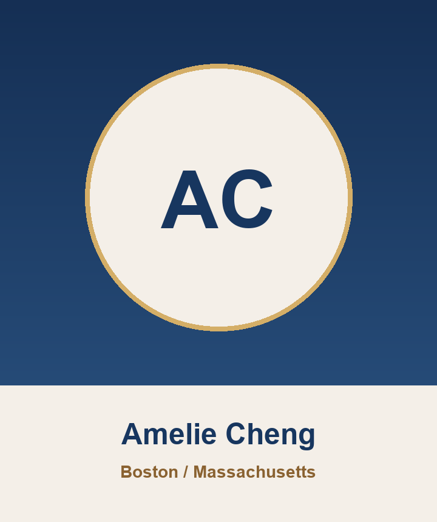

1. 各州房地產適合的投資模式，比如買進整修後出租、再融資、重複操作的投資模式, 短期翻修轉售, 短租, 中期出租, 短租法規例外或限制, 多戶住宅\n2. 潛在租客客群，例如高薪單身工程師、高薪家庭、短期旅客、中期醫護或外派人員等\n3. 各州適合投資的區域，比如好學區、舊房區、多戶公寓等
客群快速判讀
目前來賓不是只想聽「哪裡會漲」，而是想知道如何安全地跨境持有、如何出租管理、如何選州別，以及稅務與資產傳承要怎麼先規劃。
最高需求主題36美國稅務 / CPA
最熱門州別25Phoenix / Dallas 並列
購買時間40多數仍在研究期
參加方式36偏線上學習
感興趣州別
最想深入了解
參加原因
預算與準備度
購買預算
年齡輪廓
八位講者會前重點
以下依照報名問卷的州別、主題與開放問題，整理每位講者可優先準備的內容。
亞利桑那州（鳳凰城 Phoenix） · 25 人
Sabrina Woodhall
Arizona / Phoenix 市場、住宅買賣、商業地產、出租媒合
會前重點
- Phoenix 與 Arizona 是目前最熱門的州別之一，與 Dallas 並列第一。
- 來賓會想聽市場是否還有漲勢、TSMC 與台積電供應鏈是否仍支撐租屋需求。
- 請準備適合海外買家的區域、價格帶、租客輪廓與風險提醒。
建議優先回答
- Phoenix 現在房價、租金與空置率趨勢如何？
- 海外投資客比較適合住宅、商業地產，還是出租媒合型標的？
- 哪些區域適合長租、短租或中期出租？
- Arizona 投資的常見誤區與避雷重點是什麼？
德州（達拉斯 Dallas） · 26 人
Hannah Hsu
Texas / Dallas 市場、選區、地產投資趨勢、生活與移居
會前重點
- Dallas 與 Phoenix 同為最高興趣州別，適合放在主軸市場比較。
- 來賓關注投資、自住、移居、教育與區域選擇，不只是單純報酬率。
- 可加入從加州移居 Dallas 的實務經驗，以及生活圈與學區差異。
建議優先回答
- Dallas 哪些區域適合投資，哪些適合自住或家庭移居？
- Dallas 與 Phoenix、加州相比，租金報酬與風險差在哪裡？
- 買房前如何判斷社區、學區、治安與未來發展？
- 是否需要 staging、修繕或物件包裝才能提高出租或轉售表現？
加州南部（Southern California） · 25 人
Shelby Wu
Southern California、住宅買賣、投資置產、1031 Exchange、出租管理資源整合
會前重點
- 南加州興趣度很高，來賓會想知道高房價市場還能不能進場。
- 資料顯示來賓關心穩定租金、資產配置、學區與不同投資目的的切入方式。
- 可強調不同目的：自住、出租、資產保值、1031 Exchange，各自該怎麼選。
建議優先回答
- 南加州高房價下，哪些買法仍有合理回報？
- 不同城市或學區的租客族群、空置風險與管理難度如何？
- 1031 Exchange 對海外或跨州資產配置有什麼實用情境？
- 南加州房屋裝修、維護與出租管理有哪些容易低估的成本？
加州北部（Northern California） · 24 人
Yu-En Tsai
Northern California / Bay Area、科技業需求、舊金山灣區房地產
會前重點
- 北加州興趣度與南加州相同，特別適合談科技業與高薪租客需求。
- 來賓中有資訊、工程、教育研究、不動產背景，對區域邏輯會有耐心聽細節。
- 可用 Bay Area 不同區域風土民情、交通、公司聚落與租客輪廓切入。
建議優先回答
- 灣區不同城市的投資邏輯有何差異？
- 科技業趨勢、遠端工作與 AI 產業對房市的影響是什麼？
- 工程師租客、家庭租客與學生族群，各自適合哪些產品？
- 全屋裝修、ADU 或加值型策略是否適合海外投資人？

麻薩諸塞州（波士頓 Boston） · 18 人
Amelie Cheng
Massachusetts / Boston 市場、教育城市、東岸資產配置
會前重點
- Boston 在報名問卷中有明確需求，不應被忽略。
- 來賓關心教育、留學、自住、退休與資產傳承，Boston 適合用教育城市與長期持有角度說明。
- 可準備 Boston / Massachusetts 和其他州在價格、租客、法規、管理難度上的差異。
建議優先回答
- Boston 適合哪一類投資人？教育、自住、出租或長期資產配置？
- 學生租屋、家庭租屋與高收入工作族群的需求差異為何？
- Massachusetts 與 Phoenix、Dallas、加州相比，進場門檻與風險差在哪裡？
- 外國人持有 Boston 房產的稅務與遺產規劃有哪些要先知道？
出租與遠端物業管理 · 31 人
Lydia Lee
Airbnb / 出租管理、遠端營運、物業管理與風險控管
會前重點
- 出租與遠端管理有 13 位已付款來賓勾選，是最需要實戰案例的主題之一。
- 開放問題直接提到買進整修後出租、短期翻修轉售、短租、中期出租、多戶住宅與租客族群。
- 可用真實營運流程講清楚：選址、採買、上架、清潔、維修、定價與平台風險。
建議優先回答
- 買進整修後出租、短期翻修轉售、短租、中期出租、多戶住宅，各自適合什麼市場？
- 海外屋主如何管理清潔、維修、客訴、保險與緊急狀況？
- 哪些物件不適合做 Airbnb 或短租？
- 遠端營運最常被低估的成本與人力安排是什麼？
美國稅務、CPA 與申報重點 · 36 人
Kevin Huang
USCPA / EA、美國稅務、跨境稅務、LLC / Trust / Estate Planning
會前重點
- 稅務是目前最高需求主題，16 位來賓勾選。
- 持有架構與資產傳承有 15 位勾選，且開放問題明確問到 LLC、不可撤銷信託、遺產稅、贈與稅、OBU 公司。
- 這場建議務必講到外國人持有美國房產的常見架構、申報與繼承風險。
建議優先回答
- 非美國籍個人持有美國房產，如何降低未來遺產稅與繼承程序風險？
- 個人、LLC、OBU 公司、Trust 持有房產的差異是什麼？
- 出租收入、資本利得、州稅、FBAR / FATCA 可能涉及哪些申報？
- 買房前應該先問 CPA 哪些問題，避免之後架構重做？
日本現場與跨境配置 · 7 人
Kenny Lin
日本在地、不動產、日本生活、移民業務、資產配置連結
會前重點
- 雖然問卷主軸是美國房地產，但活動在東京，日本在地信任感很重要。
- 可補強日本參加者最在意的付款、語言、跨境溝通、匯款、後續服務與日本房產比較。
- Kenny 的角色適合做日本參加者與美國講師之間的轉譯與風險提示。
建議優先回答
- 住在日本的參加者要如何安全地參與美國房地產投資？
- 日本房產與美國房產，在資產配置、管理與報酬邏輯上差異為何？
- 日本人在跨境匯款、簽約、稅務與後續服務上要注意什麼？
- 活動後如果要進一步諮詢，流程如何安排比較安心？
來賓明確寫出的問題
目前多數人沒有填開放題，但已填的問題都非常有價值，集中在投資模式、出租客群、LLC / Trust、遺產稅、非美國籍持有與 OBU 公司比較。
購買房產後設立LLC和不可撤銷信託等流程與法規，遺產稅與贈與稅相關法規
1. 無美國籍個人持有西雅圖房產, 要如何避免未來巨額遺產稅和遺產手續\n2. 無美國籍個人和OBU 公司持有美國西雅圖&麻州房產, 個人稅負和遺產稅和遺產手續的比較
Tax and estate planning among 3 countries: Taiwan, Japan and USA
在美國紐約市以及其他城市工作，租房子與買房自住和出租的比較與建議。美國公民貸款買房與外國人在美國買房的優缺點比較和要注意的稅賦差別及法律規定。
不知道是否能另外針對Vegas區域說明
新移民如何選擇哪個區域落腳，新移民的注意事項
活動前建議安排
- 開場先講清楚一張票包含現場與線上。目前多數已付款來賓偏線上六場課程，務必讓大家知道後續觀看連結、提醒方式與回放規則。
- 每位市場型講者都要給「適合誰、不適合誰」。來賓多半尚未確定購買時間，因此比起強推物件，更需要判斷框架。
- Kevin 的稅務與架構段落要放足時間。這是目前最高需求，也有最具體問題。
- Lydia 的出租管理段落要非常實務。來賓會想知道遠端管理、短租、中期租、多戶住宅和實際營運風險。
- 活動後追蹤可分眾。Phoenix / Dallas、加州、Boston、稅務架構、出租管理，各自用不同後續訊息，不要只發同一封。